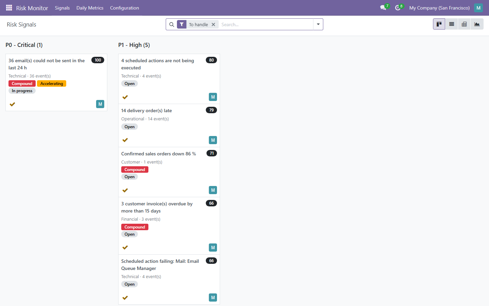
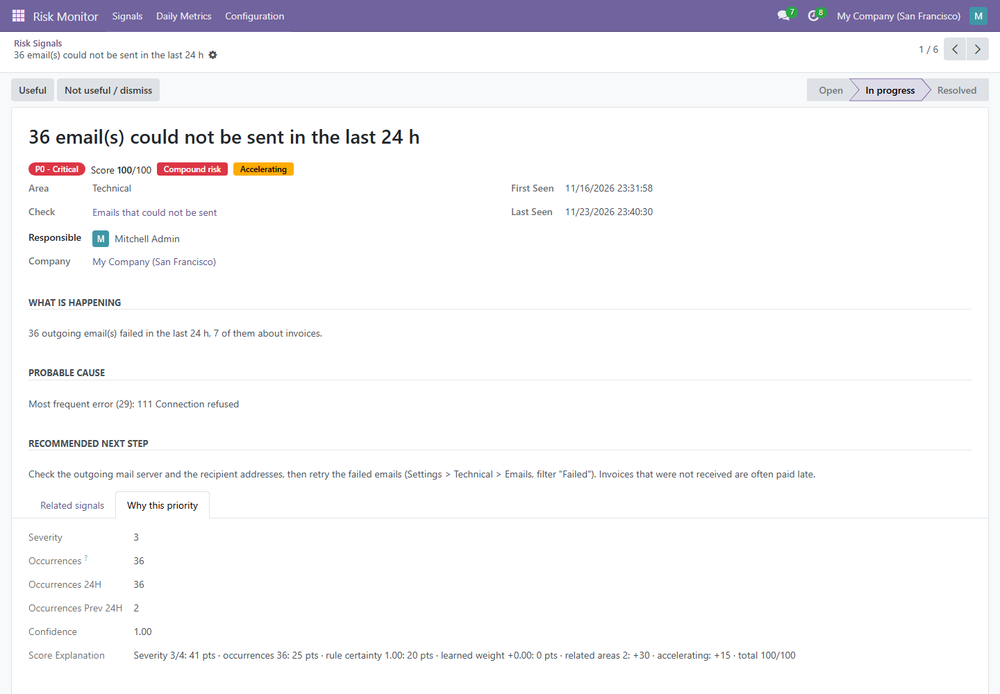
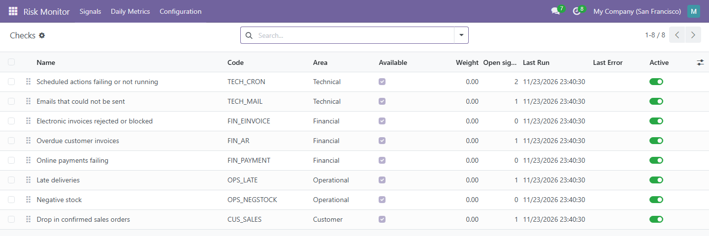
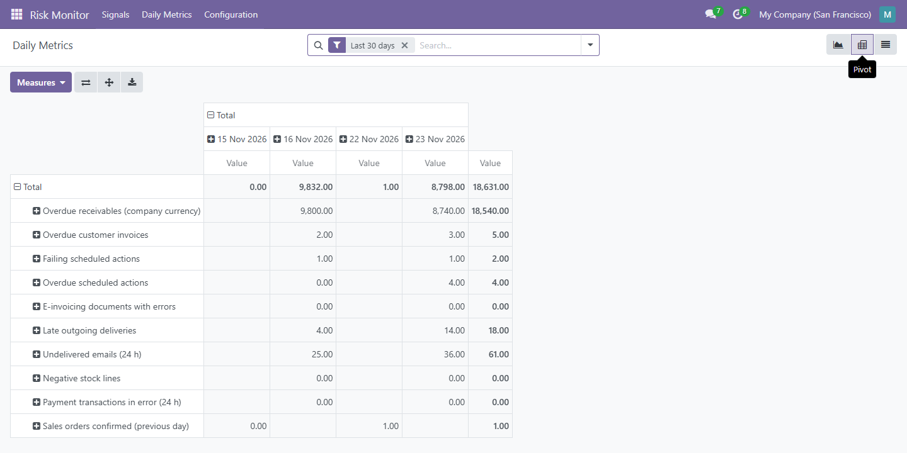
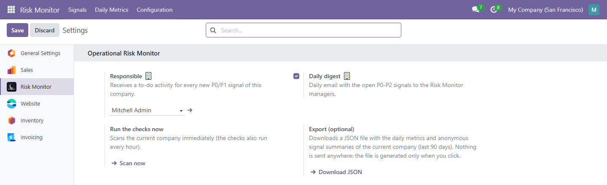

Find out about silent failures in Odoo before your customers, your accountant or the tax agency do.
Every hour it checks the database, turns operational problems into prioritised signals (P0-P3) with a probable cause and a recommended next step, links related problems across areas, assigns them to a responsible user and verifies afterwards that each problem really disappeared.

| Check | Area | What is reported | Needs |
|---|---|---|---|
| Scheduled actions failing or not running | Technical | Scheduled actions with consecutive failures (Odoo deactivates them after 5 failures over 7 days) and actions overdue by more than one interval. Three or more overdue actions are reported as a stopped cron worker (critical). | - |
| Emails that could not be sent | Technical | Outgoing emails in failed state in the last 24 h, with the most frequent error. Severity rises when invoice emails are affected. Compared with the previous 24 h to detect acceleration. | - |
| Electronic invoices rejected or blocked | Financial | Spain Veri*Factu: invoices whose latest record was rejected or registered with errors by the AEAT. Documents of e-invoicing formats based on account_edi (for example Spain SII) blocked by an error or waiting for more than 24 h. | Invoicing; Veri*Factu or SII localisation |
| Overdue customer invoices | Financial | Posted customer invoices unpaid beyond a grace period, above a minimum amount. Severity rises when the overdue amount grows 20 % or more in 7 days. | Invoicing |
| Online payments failing | Financial | Payment transactions in error in the last 24 h, compared with the previous 24 h. | Payment providers |
| Late deliveries | Operational | Outgoing transfers not done whose scheduled date is in the past beyond a grace period. | Inventory |
| Negative stock | Operational | Product quantities below zero in internal locations. | Inventory |
| Drop in confirmed sales orders | Customer | Orders confirmed the previous day compared with the same weekday of the 4 previous weeks (reported from a 40 % drop, with at least 5 orders on average). | Sales |
Checks whose app is not installed are skipped automatically. Thresholds and grace periods can be changed per check; each check can be switched off.
The score (0-100) is deterministic and explained on every signal:
P0 from 85, P1 from 65 (or critical severity), P2 from 40, P3 below.




base_setup and mail; each check activates when its app is installed.account_edi and are not covered yet.Questions, bugs or a check you would like to see: elmershan7878@gmail.com